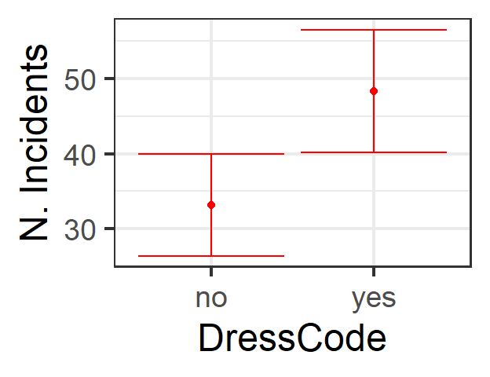

Chapter 7 Model Averaging
So far, we have used AIC and/or BIC for model selection, to decide which variables to keep in a “best” model and which to exclude. But we have already seen a number of cases where there is not one model that is clearly superior to all the others. In those cases, we have decided on the smallest model (with the fewest predictors), but there are other options when many competing models have similar scores.
One option is not to choose – instead, keep them all, and make predictions via a weighted average of all the models. The models with the best IC scores get more weight. This can be a good option if the main goal is accurate prediction (rather than deciding definitively which predictors are “good” ones and which are not).
How can we do it? Let’s explore an example.
7.1 Data: School Survey on Crime and Safety
The data for this example are from a survey of U.S. schools, the 2000 School Survey on Crime and Safety. There is information about the study at
http://catalog.data.gov/dataset/2000-school-survey-on-crime-and-safety,
which says the study “is a cross-sectional survey of the nation’s public schools designed to provide estimates of school crime, discipline, disorder, programs and policies. SSOCS is administered to public primary, middle, high, and combined school principals in the spring of even-numbered school years…Public schools were sampled in the spring of 2000 to participate in the study.”
The dataset you will use is available online at:
http://sldr.netlify.com/data/sscrime.csv
It contains a number of variables:
VisitorCheckIn: Whether visitors to the school must check in to gain entry to the school.LockedGates: Whether there are locked gates at the entry to the school.MetalDetectors: Whether there is a metal detector at the entrance to the school.DrugSniffDog: Whether a drug-sniffing dog is randomly brought into the school to carry out inspections.DrugTesting: Whether any drug testing of students occurs.UniformsRequired:Whether students are required to wear uniforms.DressCode: Whether a strict dress code is enforced.Lockers: Whether students have lockers.StudentIDBadges: Whether students are required to wear ID badges.StaffIDBadges: Whether teachers and other staff are required to wear ID badges.SecurityCameras: Whether there are security cameras on the premises.OfficialRiotPlan: Whether the school has a written plan in place for how to deal with a riot or large-scale fight.ViolenceReductionProgram: Whether the school has a Violence Reduction Program in place.Security: Whether security officers are present on the premises.TrainingHours: Average amount of time (in hours) that teachers and staff have devoted to training related to violence reduction.AttacksWithoutWeapon: Number of attacks that have occurred at the school, not involving a weapon.Thefts: Number of thefts.Vandalism: Number of incidents of vandalism.ViolentIncidentsTotal: Number of violent incidents of all types that have occurred at the school.Enrollment: Number of students enrolled in the school (categorical)NEnrollment: Number of students enrolled in the school (numeric)SurveyRespondent: The identity of the person who filled out the survey.Location: Whether the location of the school is Urban, Rural, etc.
7.2 Modelling number of violent incidents per school
We will fit a model for the number of violent incidents total as a function of a number of predictors. This is count data and we will fit a negative binomial regression model:
require(glmmTMB)
school.nb2 <- glmmTMB(ViolentIncidentsTotal ~ TrainingHours + Location +
SecurityCameras + DressCode + UniformsRequired +
NEnrollment, data=ssc,
family=nbinom2(link='log'))I will use AIC and the dredge() function to compare all possible subsets of my saturated model and figure out which variables should be included in the best model. I chose AIC in this case because it is perhaps more widely used than BIC (that’s not a good reason unless you really have no better one, but there you have it) and because with the relatively small sample size here, I don’t feel a particular need to use BIC for its larger penalty term.
require(MuMIn)
#do "dredge" for model selection
mod.sel <- dredge(school.nb2, rank='AIC')
head(mod.sel, 8)## Global model call: glmmTMB(formula = ViolentIncidentsTotal ~ TrainingHours + Location +
## SecurityCameras + DressCode + UniformsRequired + NEnrollment,
## data = ssc, family = nbinom2(link = "log"), ziformula = ~0,
## dispformula = ~1)
## ---
## Model selection table
## cnd((Int)) dsp((Int)) cnd(DrC) cnd(Lct) cnd(NEn) cnd(ScC) cnd(TrH)
## 4 3.610 + + +
## 36 3.585 + + +
## 12 3.635 + + + +
## 8 3.570 + + + 2.537e-05
## 20 3.608 + + + 0.0008916
## 44 3.610 + + + +
## 40 3.529 + + + 3.410e-05
## 16 3.588 + + + 3.140e-05 +
## cnd(UnR) df logLik AIC delta weight
## 4 6 -1745.380 3502.8 0.00 0.287
## 36 + 7 -1745.017 3504.0 1.27 0.152
## 12 7 -1745.103 3504.2 1.45 0.139
## 8 7 -1745.280 3504.6 1.80 0.117
## 20 7 -1745.380 3504.8 2.00 0.106
## 44 + 8 -1744.734 3505.5 2.71 0.074
## 40 + 8 -1744.840 3505.7 2.92 0.067
## 16 8 -1744.953 3505.9 3.15 0.060
## Models ranked by AIC(x)Because the first 7 or so models all have AIC scores within 3 units of each other, it is hard to choose one best model here. In this situation, one way to choose is to pick the model that includes the smallest number of predictors, and still acheives an AIC that is among the best. Another option would be to use model averaging.
7.3 Model Averaging
What if we wanted to use model averaging to find the best model, instead? We might choose this route because there are several models that all have AIC that are close to each other and thus fit the data approximately equally well. So we might choose to make predictions (and compute coefficients) that are the average of all the models (weighted by IC weights).
Notes of caution:
- If the model is not a linear regression (if there is a link function for instance) then it’s important to get predictions by averaging the predictions from the different models, not by making predictions using the model-averaged coefficients. The code below is careful to do this.
- Model averaging is used pretty widely but is also controversial (like most model selection methods, in fact!) For example, see: [https://esajournals.onlinelibrary.wiley.com/doi/full/10.1890/14-1639.1] and [https://drewtyre.rbind.io/post/rebutting_cade/].
To do model averaging, we use package MuMIn (function model.avg).
7.3.1 Getting the Averaged Model
The following code gets the average model. If we did the default (fit=FALSE), it would be a bit faster, but we would then not be able to get predictions from the model.
##
## Call:
## model.avg(object = get.models(object = mod.sel2, subset = NA))
##
## Component model call:
## glmmTMB(formula = ViolentIncidentsTotal ~ <64 unique rhs>, data =
## ssc, family = nbinom2(link = "log"), ziformula = ~0, dispformula =
## ~1)
##
## Component models:
## df logLik AICc delta weight
## 12 6 -1745.38 3502.98 0.00 0.24
## 126 7 -1745.02 3504.33 1.35 0.12
## 124 7 -1745.10 3504.51 1.52 0.11
## 123 7 -1745.28 3504.86 1.88 0.09
## 125 7 -1745.38 3505.06 2.08 0.08
## 1246 8 -1744.73 3505.86 2.87 0.06
## 1236 8 -1744.84 3506.07 3.08 0.05
## 1234 8 -1744.95 3506.29 3.31 0.05
## 1256 8 -1745.02 3506.42 3.44 0.04
## 1245 8 -1745.10 3506.59 3.60 0.04
## 1235 8 -1745.28 3506.95 3.96 0.03
## 12346 9 -1744.49 3507.46 4.48 0.03
## 12456 9 -1744.73 3507.95 4.96 0.02
## 12356 9 -1744.84 3508.17 5.18 0.02
## 12345 9 -1744.95 3508.38 5.40 0.02
## 123456 10 -1744.48 3509.56 6.58 0.01
## 2 5 -1753.09 3516.33 13.35 0.00
## 26 6 -1752.29 3516.80 13.82 0.00
## 24 6 -1752.60 3517.42 14.44 0.00
## 246 7 -1751.79 3517.87 14.89 0.00
## 25 6 -1753.09 3518.40 15.41 0.00
## 23 6 -1753.09 3518.40 15.41 0.00
## 236 7 -1752.26 3518.82 15.84 0.00
## 256 7 -1752.29 3518.87 15.89 0.00
## 234 7 -1752.59 3519.48 16.49 0.00
## 245 7 -1752.59 3519.49 16.50 0.00
## 2346 8 -1751.72 3519.82 16.83 0.00
## 2456 8 -1751.78 3519.96 16.97 0.00
## 235 7 -1753.09 3520.47 17.49 0.00
## 2356 8 -1752.26 3520.90 17.92 0.00
## 2345 8 -1752.59 3521.56 18.57 0.00
## 23456 9 -1751.71 3521.91 18.92 0.00
## 136 5 -1756.63 3523.42 20.43 0.00
## 1346 6 -1756.08 3524.39 21.41 0.00
## 13 4 -1758.25 3524.60 21.62 0.00
## 16 4 -1758.59 3525.28 22.29 0.00
## 1356 6 -1756.61 3525.44 22.45 0.00
## 134 5 -1757.74 3525.65 22.66 0.00
## 1 3 -1759.81 3525.68 22.69 0.00
## 13456 7 -1756.08 3526.46 23.48 0.00
## 135 5 -1758.21 3526.59 23.60 0.00
## 146 5 -1758.30 3526.76 23.78 0.00
## 14 4 -1759.53 3527.16 24.17 0.00
## 156 5 -1758.54 3527.24 24.26 0.00
## 15 4 -1759.75 3527.61 24.62 0.00
## 1345 6 -1757.73 3527.69 24.71 0.00
## 1456 6 -1758.28 3528.79 25.80 0.00
## 145 5 -1759.50 3529.15 26.17 0.00
## 36 4 -1765.82 3539.76 36.77 0.00
## 346 5 -1764.96 3540.08 37.10 0.00
## 6 3 -1767.12 3540.31 37.33 0.00
## 46 4 -1766.54 3541.19 38.20 0.00
## 356 5 -1765.77 3541.70 38.71 0.00
## 3456 6 -1764.95 3542.12 39.14 0.00
## 56 4 -1767.04 3542.18 39.20 0.00
## (Null) 2 -1769.34 3542.72 39.74 0.00
## 3 3 -1768.50 3543.05 40.07 0.00
## 456 5 -1766.50 3543.17 40.18 0.00
## 34 4 -1767.71 3543.52 40.54 0.00
## 4 3 -1768.77 3543.61 40.63 0.00
## 5 3 -1769.24 3544.54 41.55 0.00
## 35 4 -1768.41 3544.93 41.95 0.00
## 345 5 -1767.68 3545.51 42.53 0.00
## 45 4 -1768.72 3545.54 42.55 0.00
##
## Term codes:
## cond(DressCode) cond(Location) cond(NEnrollment)
## 1 2 3
## cond(SecurityCameras) cond(TrainingHours) cond(UniformsRequired)
## 4 5 6
##
## Model-averaged coefficients:
## (full average)
## Estimate Std. Error Adjusted SE z value
## cond((Int)) 3.596e+00 1.316e-01 1.320e-01 27.252
## cond(DressCodeyes) 3.765e-01 9.608e-02 9.639e-02 3.906
## cond(LocationRural) -5.597e-01 1.328e-01 1.332e-01 4.201
## cond(LocationTown) -5.874e-01 1.543e-01 1.548e-01 3.795
## cond(LocationUrban Fringe) -1.024e-01 1.179e-01 1.183e-01 0.866
## cond(UniformsRequiredyes) 5.685e-02 1.373e-01 1.376e-01 0.413
## cond(SecurityCamerasyes) -2.384e-02 6.451e-02 6.466e-02 0.369
## cond(NEnrollment) 8.826e-06 2.812e-05 2.818e-05 0.313
## cond(TrainingHours) -2.156e-04 2.509e-02 2.517e-02 0.009
## Pr(>|z|)
## cond((Int)) < 2e-16 ***
## cond(DressCodeyes) 9.39e-05 ***
## cond(LocationRural) 2.65e-05 ***
## cond(LocationTown) 0.000148 ***
## cond(LocationUrban Fringe) 0.386523
## cond(UniformsRequiredyes) 0.679432
## cond(SecurityCamerasyes) 0.712383
## cond(NEnrollment) 0.754163
## cond(TrainingHours) 0.993166
##
## (conditional average)
## Estimate Std. Error Adjusted SE z value
## cond((Int)) 3.596e+00 1.316e-01 1.320e-01 27.252
## cond(DressCodeyes) 3.771e-01 9.499e-02 9.530e-02 3.956
## cond(LocationRural) -5.598e-01 1.328e-01 1.332e-01 4.203
## cond(LocationTown) -5.874e-01 1.542e-01 1.547e-01 3.796
## cond(LocationUrban Fringe) -1.024e-01 1.179e-01 1.183e-01 0.866
## cond(UniformsRequiredyes) 1.661e-01 1.921e-01 1.927e-01 0.862
## cond(SecurityCamerasyes) -7.409e-02 9.597e-02 9.628e-02 0.770
## cond(NEnrollment) 3.049e-05 4.550e-05 4.565e-05 0.668
## cond(TrainingHours) -8.265e-04 4.912e-02 4.928e-02 0.017
## Pr(>|z|)
## cond((Int)) < 2e-16 ***
## cond(DressCodeyes) 7.61e-05 ***
## cond(LocationRural) 2.63e-05 ***
## cond(LocationTown) 0.000147 ***
## cond(LocationUrban Fringe) 0.386505
## cond(UniformsRequiredyes) 0.388948
## cond(SecurityCamerasyes) 0.441588
## cond(NEnrollment) 0.504120
## cond(TrainingHours) 0.986617
## ---
## Signif. codes: 0 '***' 0.001 '**' 0.01 '*' 0.05 '.' 0.1 ' ' 1If you are trying to get model-averaged coefficients from the summary output above, be sure to look for the “full average” ones and not the “conditional average” (which only includes models where the predictor was included, i.e., where the coefficient was not 0).
7.3.2 Getting Predictions from the Averaged Model
The resulting predictions are a list with entries fit and se.fit just like we are used to. (So you could make predictions with a newdata data set and use them for prediction plots, for example. Be careful – your “new” dataset now has to include values for all candidate predictors in the full model.)
Comparing with the predictions from our previous “best” model:
best.school.nb2 <- glmmTMB(ViolentIncidentsTotal ~ DressCode + Location,
data=ssc,family=nbinom2(link='log'))
pred_plot(ave.model, 'DressCode', ylab = 'N. Incidents',
data = ssc, color = 'red')
pred_plot(best.school.nb2, 'DressCode', ylab = 'N. Incidents',) 
So they are pretty comparable, but a little different (the differences may be bigger the more there are different models with similar IC results contributing to the average model – when one model carries almost all the weight, then the “single best” model and the model-averaging model will give almost the same results). It also makes sense that there will be a bit more uncertainty in the average model.